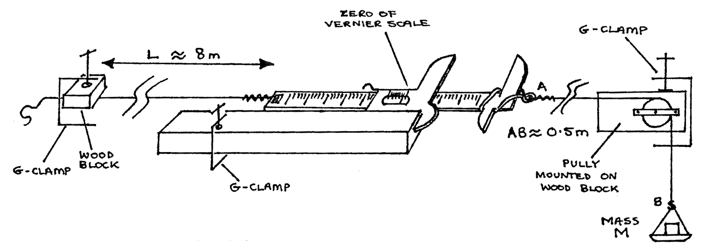
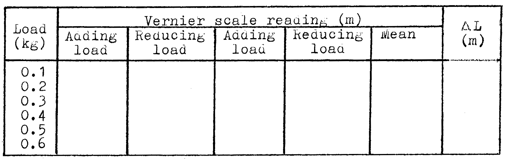

C3-2: Determining Young’s Modulus for a Wire¶
Apparatus¶
Mounted vernier scale; mounted pully; about 8m copper wire of diameter about 0.3mm; 3 G-clamps; six 100g masses with loops to hang from an S-hook; 0.5m of wire with an S-hook at one end; wooden block or metal strip to protect wire from G-clamp; metre rule; micrometer; magnifying glass; graph paper

Procedure¶
- Clamp the apparatus in place on the longest table in the lab as shown above. Be certain the vernier scale is about half-way along the sliding metal ruler. The ruler should slide freely or friction will ruin your results. Ask for some lubricating oil if the ruler is dry or binding in the vernier scale.
- Gently add the masses to the S-hook, one at a time, until all masses are on the hook. One at a time, take the masses off the hook until only one 100g mass remains on the S-hook. Repeat this process once. This will assure your wires are straight and tight.
- Measure and record the length of the wire from clamp to vernier. Measure and record the diameter of your wire in 6 different places.
- Starting with 100g, add loads in increments of 100g to the wire up to 600g total load. Take the loads off 100g at a time until only 100g remains on the S-hook. Load and unload the wire a second time in this manner. Each time you add or take off 100g, record the vernier scale reading. Tabulate your results. Find the extension, \(L\), by subtracting the mean reading when load \(= 0.1\)kg from the mean reading at other loans.
Observations¶
\(L = \text{length of the wire} =\) _____ m
\(6 \text{ readings of diameter}\): _____, _____, _____, _____, _____, _____ Avg.: _____ m
\(r = \text{radius} =\) _____ m
Tabulate:

Theory¶
stress \(=\frac{\text{force}}{\text{area}}=\frac{\text{load}}{\pi r^2}=\frac{\text{mass} \times g}{\pi r^2}\)
strain \(=\frac{\Delta L}{L}\)
Young’s modulus \(=\frac{\text{stress}}{\text{strain}}=\frac{M g L}{\pi r^2 \Delta L}\)
Analysis¶
- Graph load against \(\Delta L\). Use the slope to find Young’s modulus for the wire.
- Find the elastic modulus for copper in a reference book. What is the difference between the value you determined and that in the book? Explain any difference in terms of the numerical errors in your experiment.